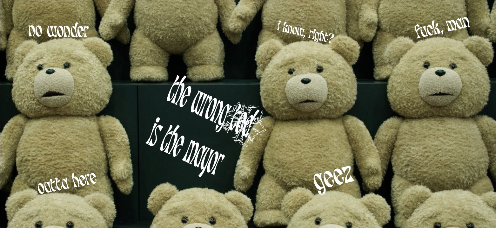

Frequently Asked Questions
Q.Who is Tear Gas Ted?
Refer to our About page to learn more about TGT!
Q.Why Ted Wheeler?
Because we live in Portland and TGT’s been re-elected - and we don’t trust Mayors who tear gas protesters for more than 100 consecutive nights. Also, a certain Trump already lost (yay!) so we decided to tackle a more current, on-going issue that is the mayor of portland.
Q.Why was my shipping delayed?
We're experiencing delays in our delivery system due to bird politics, as our murder of crows (our most reliable package delivery system) have been qutting their jobs en masse, and we had to rely on pidgeons to deliver our packages.
Q.What is the purpose of this website?
As explained in the Index page, our purpose lies in demoting Ted Wheeler so that Portland can be a better place with less cops.